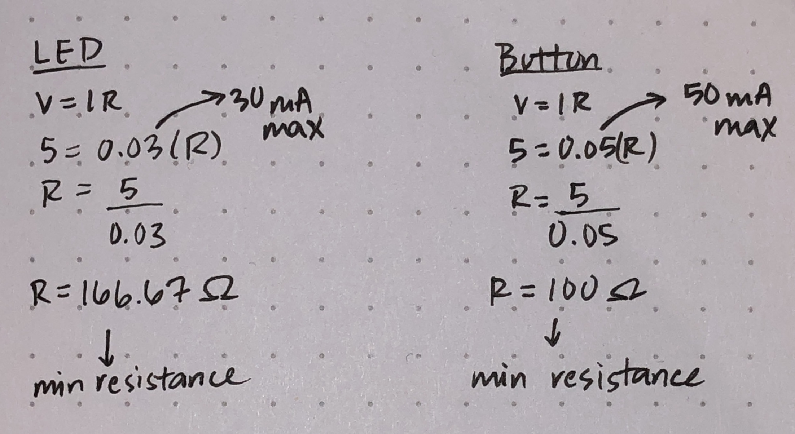
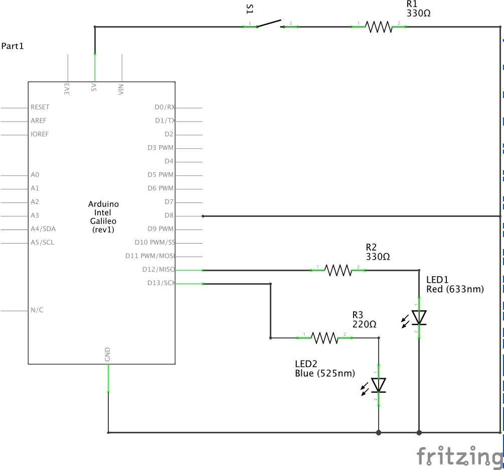
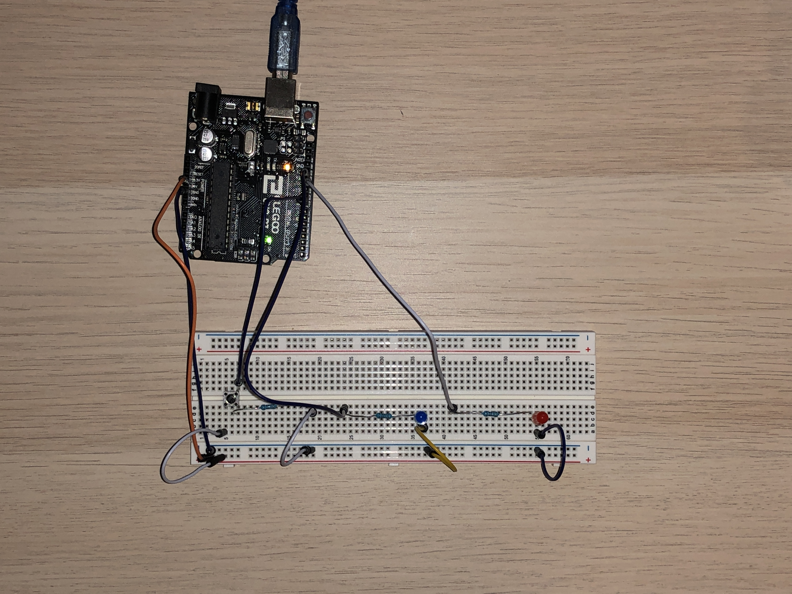

Arsh's Assignment 2!
Circuit in operation

When the button is pressed, the blue LED turns on, and the red LED fades in and out.
Calculations

These are my calculations for the minimum resistance required for the LEDs and button. I used 330 ohm resistors to keep the amount of current flowing through the circuit to a safe level.
Schematic

Circuit

Code Snippet
int buttonPin = 8; // number of pushbutton pin
int ledBPin = 12; // number of blue LED pin
int ledRPin = 11; // number of RGB LED pin
int buttonState = 0; // variable for reading pushbutton status
void setup() {
pinMode(buttonPin, INPUT); // initialize pushbutton pin as an input
pinMode(ledBPin, OUTPUT); // initialize blue LED pin as an output
pinMode(ledRPin, OUTPUT); // initialize red LED pin as an output
}
void loop() {
buttonState = digitalRead(buttonPin); // reads the state of the pushbutton value
// if pushbutton is pressed
if (buttonState == HIGH) {
digitalWrite(ledBPin, HIGH); // turn blue LED on
// fade red LED in from min to max in increments of 5 points
for (int fadeValue = 0; fadeValue <=255; fadeValue += 5) {
analogWrite(ledRPin, fadeValue); // sets the value of RGBPin as a range from 0 to 255
delay(15); // wait for 30 milliseconds to see dimming effect
}
// fade red LED out from max to min in increments of 5 points
for (int fadeValue = 255; fadeValue >=0; fadeValue -= 5) {
analogWrite(ledRPin, fadeValue); // sets the value of RGBPin as a range from 0 to 255
delay(15); // wait for 30 milliseconds to see dimming effect
}
} else { // if pushbutton is not pressed
digitalWrite(ledBPin, LOW); // turn blue LED off
digitalWrite(ledRPin, LOW); // turn red LED off
}
}